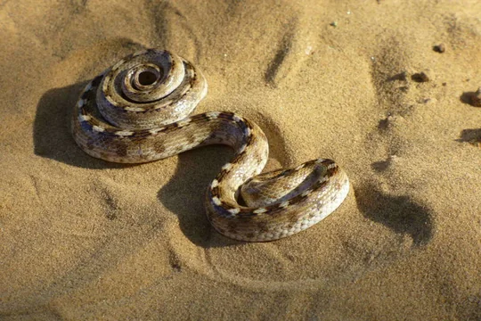
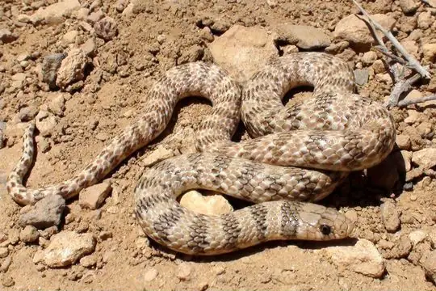

Snakes of Qatar
6 living snake species are recorded in Qatar in SnakeList: 3 venomous and 3 non-venomous, from 4 families.
- 6living species
- 3venomous
- 3non-venomous
- 4families
Danger to people
- 2harmful to people
- 2dangerously venomous
- 1mildly venomous
- 0giant constrictors
- 3harmless
Harmful = dangerously venomous + giant constrictors. Harmless = not venomous and not a giant constrictor. Mildly venomous snakes have no serious bites to people documented. Any snake can bite.
These totals count the unique living snake species SnakeList records in Qatar. A species counts if it is recorded anywhere in the country, so not every snake lives in every part of it.
In SnakeList’s checklist filters
How many of the 6 living species here each filter in the SnakeList app picks out.
Snake family4 types, 4 families
Type
- 1Boa
- 2Colubrid
- 2Viper
- 1Other
Family
- 2Colubridae
- 2Viperidae
- 1Boidae
- 1Psammophiidae
Habitats13 habitat groups
- 1Rainforests
- 5Forests & woodlands
- 3Savannas & grasslands
- 5Shrublands & heath
- 6Deserts & dunes
- 3Mountains & rocks
- 6Underground & forest floor
- 4Coasts & sea
- 3Africa
- 1South & Southeast Asia
- 4Europe & Mediterranean
- 6Middle East
- 1East & Central Asia
Habitats are estimated from where each snake is recorded and what kind of snake it is, as in the app; a snake can count in several.
Characteristics3 venomous, 1 constrictors
- 3venomous
- 3non-venomous
- 1constrictors
- 2non-constrictors
- 3constriction not documented
- 1snake eaters
Constrictor and Non-constrictor count only snakes whose family or genus is documented as constricting or not; the rest are not documented.
Other filters1 popular, 0 rare
- 1popular
- 5uncommon
- 6exotic
- 0invasive
- 4common
- 0rare
- 0no photos
- 0extinct
- 2harmful
- 3low risk
Species
Showing 6 species
 Arabian Sand BoaEryx jayakari
Arabian Sand BoaEryx jayakari Arabian Sand ViperCerastes gasperettii
Arabian Sand ViperCerastes gasperettii
Awl-headed SnakeLytorhynchus diadema
Crowned Dwarf RacerEirenis coronella Moila SnakeMalpolon moilensis
Moila SnakeMalpolon moilensis Saw-scaled ViperEchis carinatus
Saw-scaled ViperEchis carinatus
No snakes in Qatar match.
Qatar’s snakes in numbers
- Families: Colubridae 2, Viperidae 2, Boidae 1, Psammophiidae 1.
How precisely they are recorded
Of the 6 living species recorded in Qatar, 3 are recorded by municipality in SnakeList’s data; 3 are recorded only for Qatar as a whole, so the municipality pages list them as possible rather than recorded. SnakeList records each species by municipality, not by exact spot, so a species listed for a municipality may live in only part of it.
Municipalities
The municipalities where SnakeList records snakes, with how many living species are recorded in each. Each page has its species, venomous snakes, families, the species found only there, its cities and neighbours.
Cities
Its biggest cities, biggest first. SnakeList records snakes by municipality, not by city, so each city page shows the species recorded in its municipality and, separately, those only possible there - not species confirmed in the city.
- Ar Rayyān Al Rayyan
No place matches that.